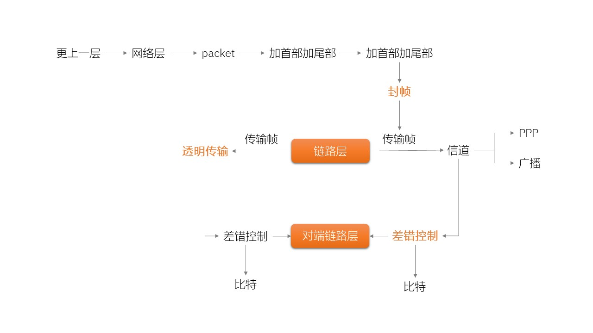
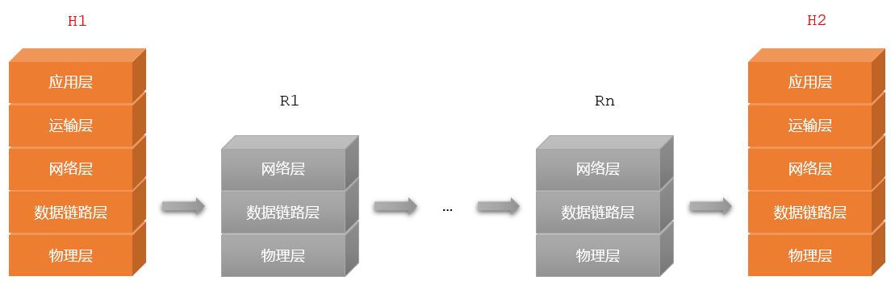
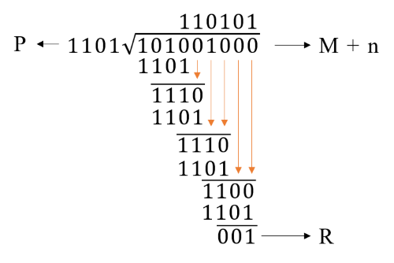

链路层 Link Layer



封帧 Frame Packaging
- 要发送的数据分别加上首部和尾部再发出去
- 封帧后的数据长度不应超过 MTU - Maximum Transfer Unit；最大传输单元
- 帧界定符
- SOH - Start Of Header；编码：01
- EOH - End Of Header；编码：04
| EOH | data | SOH |

透明传输 Transparent Transmission
- Transparent transmission
- 你发什么，我收到的就是什么
EOH ... SOH ... EOH ... SOH - 字符填充
- 数据中包含帧界定符
- 使用转义符填充，防止数据被误认为是帧边界
- 不同协议对转义字符的定义是不同的
| EOH | ... | ESC | SOH | ... | ESC | EOH | ... | SOH |
差错控制 Error Control
- 客观原因
- 数据传输没有百分百的准确，总是有误差存在
- 常见错误：比特差错；你发送的是1，我收到的是0
- 其它错误：帧丢失、帧重复、帧失序
- 衡量
- 误码率 BER - Bit Error Rate
- 某段时间内，传输错误的比特占传输比特总数的比率
- 措施
- 在数据M的后面附加上供检测用的n位冗余码再发送出去
- 冗余码，又称帧校验序列 FCS – Frame Check Sequence
- 实现
- 循环冗余检测 CRC - Cyclic Redundance Check
- 在M的数据后面加上n个0
- 用生成多项式P按照模2运算去除M+n
- 得到的余数R就是冗余码
- 思考
- bit差错是不是传输差错?
- 有了CRC，是不是就可靠传输?
| a | b | a%b |
|---|---|---|
| 0 | 0 | 0 |
| 0 | 1 | 1 |
| 1 | 0 | 1 |
| 1 | 1 | 0 |
[] 若消息 M=101001，生成多项式 P=1101，使用3位冗余码，取n=3；
则除数为P，被除数为M+000=101001000，模2运算后，余数R为001
故发送M+R=101001001
则除数为P，被除数为M+000=101001000，模2运算后，余数R为001
故发送M+R=101001001

奇偶校验
二维奇偶校验
校验和
Summary & Homework
- Summary
- 封帧
- 透明传输
- 差错控制
- Homework
- 要发送的数据是1101 0110 11，采用CRC校验，生成多项式是10011，取n=4，那么发送的数据是？